Aerials:
In cardistry, aerials are advanced techniques where a packet or multiple packets of cards are launched into the air and manipulated with the hands before being caught or reassembled. Unlike traditional card flourishes that involve keeping the cards in contact with the hands or fingers, aerials rely on momentum and precise movements to keep the cards airborne.
Aerials are often considered some of the most visually impressive and challenging moves in cardistry, requiring a high level of skill, dexterity, and timing to execute successfully. They can involve various throws, spins, flips, and catches, and they add an element of excitement and spectacle to cardistry performances.
1. Spring:
What is probably one of the most popular moves in cardistry, the Spring is a trick where all the cards in a deck are shot out of one hand, and caught by another. This trick is heavily based on what is most comfortable for you, as there is a lot of variety in how it can be performed. That being the case, I will show you the strategy that works best for me, and you can adjust as needed.
Step 1:
Hold the deck in your dominant hand with your thumb on the bottom corner with the short side facing your thumb. On the opposite corner, across from your thumb, use your middle finger to suspend the deck in the air. Gently place your remaining fingers on the borders of the deck in a natural position. They will serve as borders to help guide the cards.
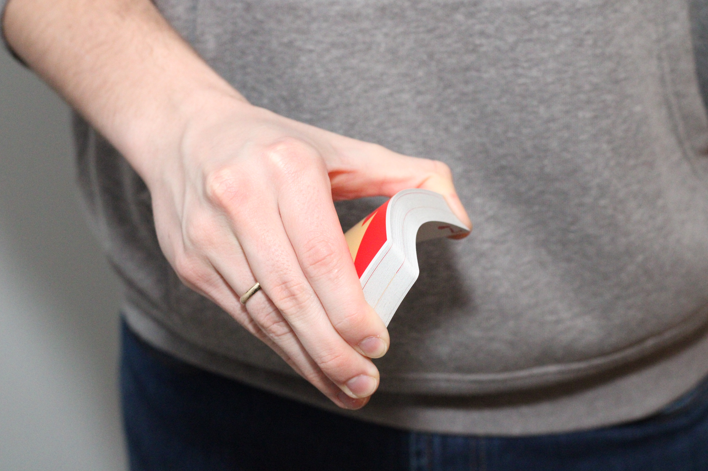Hold your non-dominant hand beneath the deck, leaving room for the cards to “spring” from your first hand. Spread your fingers with your pinky serving as a guide to keep the cards from falling.
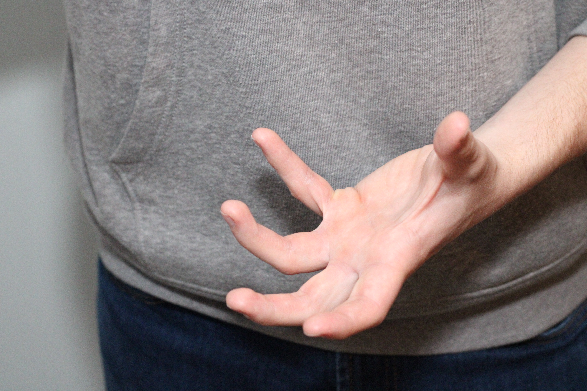Step 2:
With both hands in place, apply pressure on both sides of the deck using your thumb and middle finger on your dominant hand, this should arch the deck toward your palm. Next, slowly extend your thumb so that the cards are released consecutively.
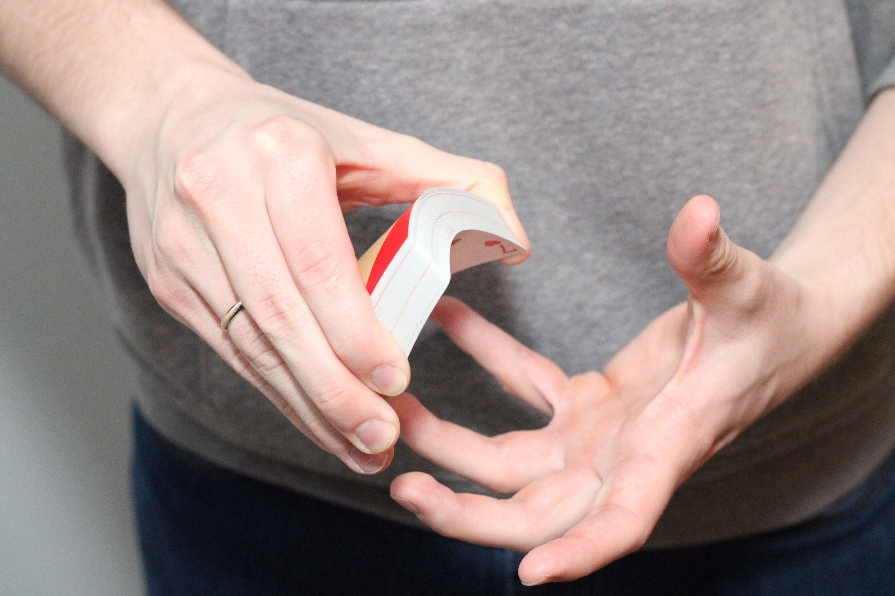Using your other hand, catch the cards close to your dominant hand. As you improve, gradually move your hands apart until you can spring the cards from one hand to the other with increasing distance.
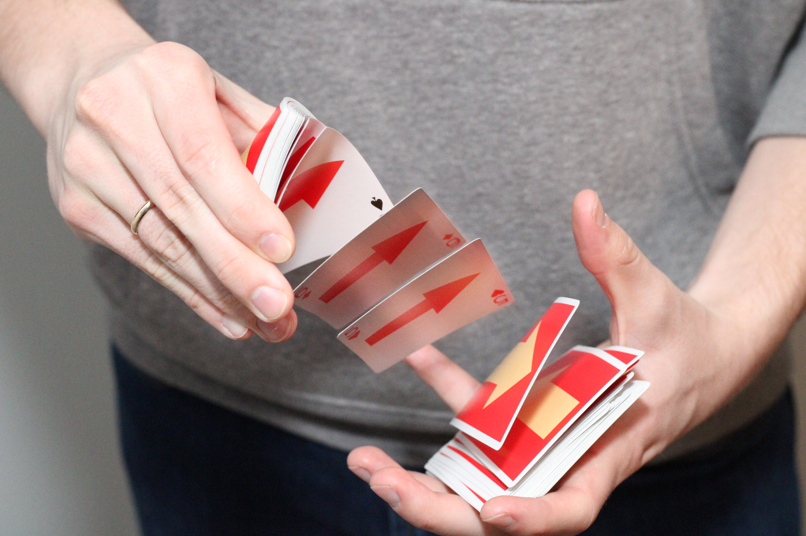2. Dribble:
The Dribble is a very similar move to the Spring, however, rather than springing the cards from one hand to the other, the Dribble consists of releasing the cards in a controlled fall that is useful in a variety of different tricks such as Anaconda.
Step 1:
Hold the deck in a modified End Grip with your dominant hand. Place your thumb on one short side of the deck, your index finger extended applying downward pressure along the long side, and your ring and pinky fingers holding the short side opposite to your thumb.
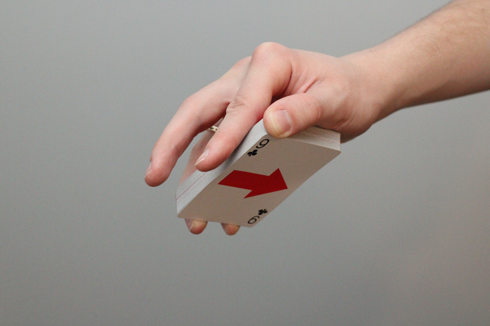Hold your non-dominant hand beneath the deck, leaving room for the cards to fall from your first hand. Spread your fingers with your pinky serving as a guide to keep the cards from falling.
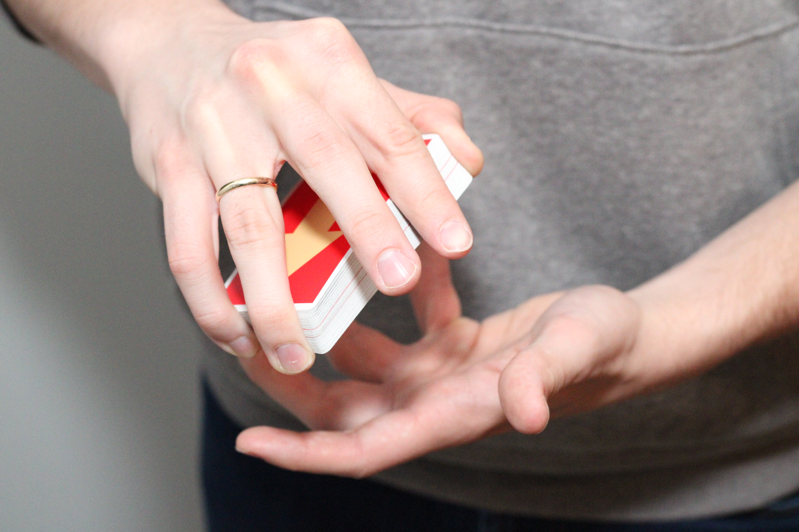Tip: hold the deck with the tips of your fingers to release the cards more easily.
Step 2:
While applying downward pressure with your index finger, gradually slide your thumb toward the base of your index finger, thus releasing the cards one by one into your non-dominant hand.
3. Card Flick:
The Card Flick is an excellent move to introduce you to the aerial realm of cardistry. Flicks are used in a variety of different tricks to add some flair to your moves.
Step 1:
Holding the deck in a Dealer's Grip in your non-dominant hand, use your thumb to slide the top card away from your hand.
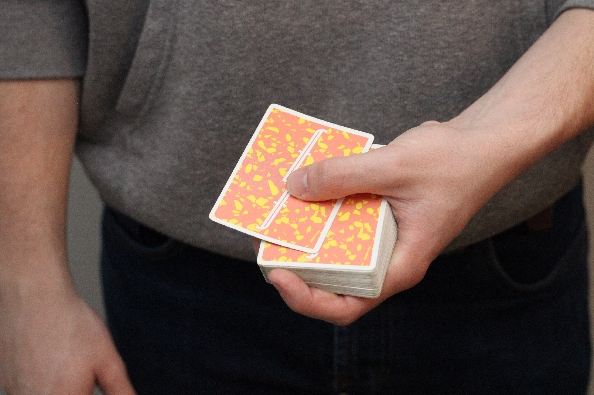Using your dominant hand, curl your fingers with your knuckles and palm facing upwards.
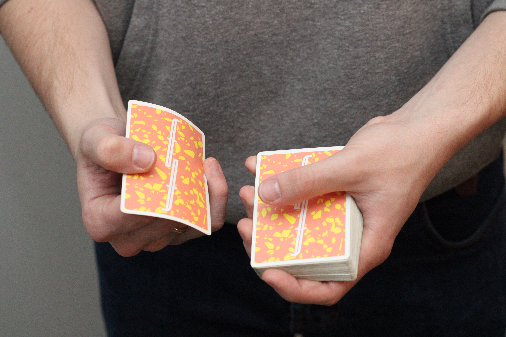Step 2:
Grasp the card that you slid off the top with your dominant hand using your thumb and pinky finger.
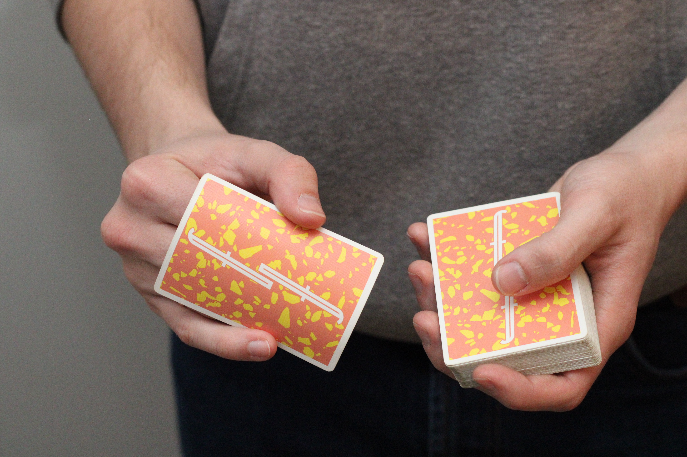Then, rotate your dominant wrist away from your hand while extending your fingers slightly.
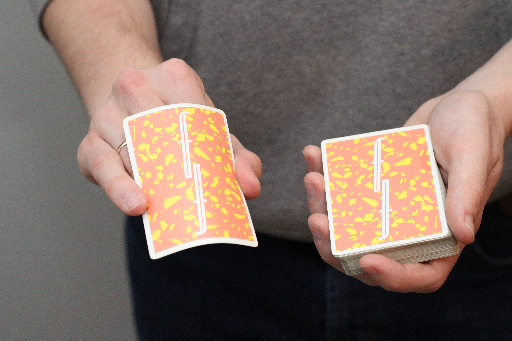Step 3:
Finally, with your dominant hand, apply downward pressure with your pinky until the card is released. If enough pressure was applied, the card should then flick off your thumb and rotate toward your non-dominant hand.
Once you are comfortable flicking the card, adjust the placement of your non-dominant hand until the card lands in that hand.
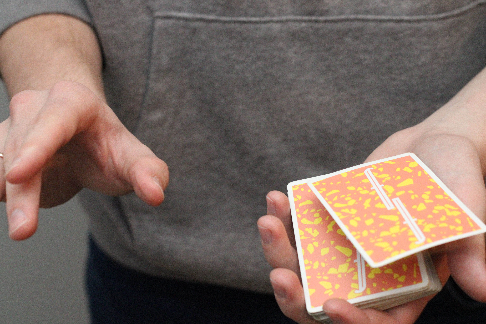Aerials require a significant amount of practice and patience to master, as they often involve complex movements and precise timing. However, they can be incredibly rewarding to learn and perform, adding an impressive and dynamic element to your cardistry repertoire.